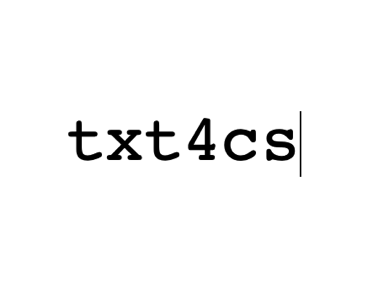

Text as Data para Ciências Sociais
guia prático com aplicações
2019-10-04
Prefácio

A partir da produção de material para o curso Text as Data: análise automatizada de conteúdo que ministrei no MQ-UFMG em 2019 e no artigo que publiquei em coautoria com Maurício Izumi (Izumi and Moreira 2018), esse livro tem como propósito difundir nas ciências sociais e humanidades técnicas e métodos de análise automatizada de conteúdo usando a linguagem R.
Objetivo
O principal objetivo do livro é ser tutorial prático de uso e aplicação de técnicas e métodos de análise automatizada de conteúdo na língua portuguesa através da linguagem R .
Sobre o autor/organizador
Davi Moreira é Professor Visitante do departamento de Ciência Política da Universidade Federal de Pernambuco (UFPE). Ph.D. em Ciência Política pela Universidade de São Paulo (USP) e vencedor do Prêmio CAPES de tese 2017 na área de Ciência Política e Relações Internacionais. Atuo nas seguintes áreas: políticas públicas, estudos legislativos, métodos quantitativos em ciências sociais e análise automatizada de conteúdo.
Para mais informações:
Licença
Este livro é distribuído de acordo com a licença Creative Commons Attribution-NonCommercial-ShareAlike 4.0 International License (CC BY-NC-SA 4.0).
Agradecimentos
Agradeço aos organizadores do MQ-UFMG 2019 pela oportunidade de ministrar o curso e assim me estimular a empreender esse projeto. Também agradeço aos amigos Manoel Galdino, Rafael Magalhães, Lincon Ribeiro e Umberto Mignozetti pelo apoio e incentivo ao longo de toda minha trajetória como cientista.
Este livro é escrito com o uso do pacote bookdown (Xie 2019), através do R Markdown e knitr (Xie 2015).
Referências
Izumi, Mauricio Yoshida, and D. C. Moreira. 2018. “O Texto Como Dado: Desafios E Oportunidades Para as Ciências Sociais.” REVISTA BRASILEIRA DE INFORMAÇÃO BIBLIOGRÁFICA EM CIÊNCIAS SOCIAIS - BIB 2 (86): 138–74.
Xie, Yihui. 2015. Dynamic Documents with R and Knitr. 2nd ed. Boca Raton, Florida: Chapman; Hall/CRC. http://yihui.name/knitr/.
Xie, Yihui. 2019. Bookdown: Authoring Books and Technical Documents with R Markdown. https://CRAN.R-project.org/package=bookdown.